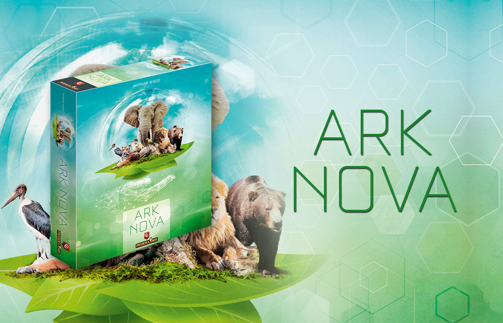
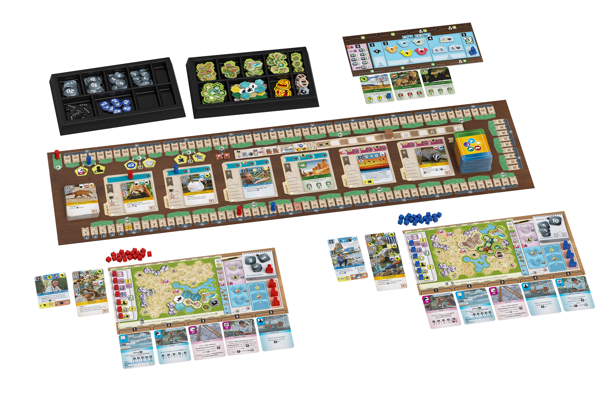

Ark Nova
Mathias Wigge · 2021 · 1-4 players · 90-150 minutes

Expansion Reviews
Verdict
My first impression of Ark Nova was that it is a stitched-together game, but a very well-stitched one. Its moving Action cards, tag-heavy deck, converging scoring tracks, and spatial puzzle all leave recognizable traces of earlier designs. Unlike Brass: Birmingham, which absorbs familiar mechanisms until their origins are hard to separate, Ark Nova lets the individual references remain visible.
That visibility is not a dismissal. The achievement lies in how consistently those parts are redirected toward the same problem: managing a short strategic cycle, judging action windows, and converting limited resources efficiently before the shared clock moves. There is no single mechanism that can summarize all of Ark Nova's pleasure, because its strength comes from the breadth and coordination of the complete system.
The mechanical foundation is the reason the game works. Its zoo theme then becomes the key advantage when Ark Nova is compared with games of similar quality. It is approachable, familiar, and less severe in atmosphere, making a large strategy game easier to choose and easier to introduce without making it strategically empty.
That combination supports an impression score of 96. The game has real weaknesses in card and map tuning, and its strategic depth is broad rather than bottomless, but very little of the actual play experience feels badly handled.

Mechanics: Familiar Parts, Complete Structure
On the rules sheet, many of Ark Nova's mechanisms look familiar. What deserves a slower look is how they connect once the game is in motion.
Mechanics receives 100/100 with a 24% weight. Good individual mechanisms alone would not be enough for that full score; what takes Ark Nova to 100 is how completely they are integrated. The Action-card row, X tokens, upgrades, Break clock, dual tracks, card system, and zoo map are each easy to understand locally, yet together they form a rich and continuous structure.
The numerical problems in the cards and zoo maps are already deducted under Balance and should not reduce Mechanics a second time. A functional failure such as the Emu's extremely narrow role does concern mechanism design, but such cases are too rare to create a substantial deduction. Conversely, the wider system's ability to limit the consequences of those problems does not create another Mechanics bonus; it lowers the weight of Balance instead.
The easiest way to understand that full score is to follow the game as it unfolds: first deciding what can be done, then turning cards and space into a plan, and finally confronting scoring and a shared clock.
Action Cards, X Tokens, And Upgrades
The five shifting Action cards are the clearest starting point, and their order immediately recalls Civilization: A New Dawn. An action becomes stronger as it moves to the right, then returns to the weakest position after use. This is easy to teach, but it turns every action into both an immediate choice and a reordering of future options. The mechanism is familiar, yet Ark Nova uses it exceptionally well.
X tokens are essential to that success. They greatly increase the range of workable actions without adding much learning cost, and their value becomes most visible in the final turns, when a single point of action strength can decide whether a plan is completed. Moving a card directly to slot 1 in exchange for an X token looks inefficient, but the option is indispensable: it accepts a small loss now to prevent a much larger loss later.
The upgrades are equally well judged. What each upgrade does, how it is obtained, and the cap on the number of upgrades have all been considered precisely, and the system has worked very well in actual play. Together with the X tokens, it is an excellent example of Ark Nova using low local complexity to buy high depth.
Cards: Familiar Language, Different Time Structure
Action cards provide the skeleton of each turn; the cards supply its specific possibilities. This is also where Ark Nova's resemblance to other games becomes most visible.
Ark Nova and Terraforming Mars speak a very similar card language. Animals provide immediate returns much like green cards; Sponsors create longer-term value like blue cards; Conservation Project cards resemble awards that a player can introduce personally. Both games rely heavily on tags and prerequisites. Ark Nova's deck is rich, and its individual card concepts are generally good.
The fundamental difference is the turn structure, followed by the hand limit. Terraforming Mars does not place a comparable limit on the number of actions in a generation; I can run thirty turns in a single generation, so the competition is more directly about accumulated resources. In Ark Nova, the number of turns is itself decisive. About 30 turns already represents an ordinary game rather than a particularly strong one, and players compete more directly through resource-conversion efficiency.
The strict hand limit reinforces that difference. Ark Nova tests short-term planning, while Terraforming Mars places more emphasis on long-term planning. Some strong Terraforming Mars players like to hide cards, complete an engine in the final generation, and produce a hundred-point explosion within that same generation. The same habit can make Ark Nova feel desperately cramped and uncomfortable. I am one of those players.
This difference in time structure also changes the consequences of card balance, and that is one of Ark Nova's cleverest design decisions. Terraforming Mars has an intricate tag and value model with strong extensibility. Its expansions and promotional cards have generally developed the system; for example, Colonies adds a three-energy trading threshold that connects energy production to the existing energy-to-heat cycle. Apart from some extreme cards and a few exceptionally poor ones such as Underground Detonations, most of its deck stays within a stable value range.
Ark Nova uses simpler tags and more direct effects, which should make its values easier to model, yet its card balance is substantially weaker. Some cards can outperform the expected model by nearly 20 money. Even after setting aside effects that may have been difficult to estimate before release, such as Determination, and cards that are simply hard to play, such as Giant Panda and King Vulture, there are easy-to-play animals such as the two tigers whose printed value can exceed the model by more than 10. Difficulty predicting Determination is a charitable explanation from the developer's perspective, not an excuse for insufficient development.
Ark Nova's short cycle mitigates this weakness because tempo matters more than raw card value. In Terraforming Mars, buying Anti-Gravity Technology at the beginning is close to self-correcting: if it is played, it can repay the investment; if it is never played, the loss is only two money. Of course, three money early and one money late are not directly comparable as a simple difference of two. In Ark Nova, keeping Giant Panda for an entire game without finding a bear tag effectively reduces the hand limit by one and damages the player's tempo. A modest, immediately playable common wall lizard may be the better opening choice.
The public card display also reduces dependence on blind draws. These protections make uneven values less likely to dominate the complete game, but they do not erase the defect. Some cards are both easy to use and clearly above the model, while a few functional designs are worse than a mere numerical miss. Some animals are disliked simply because their viable role is too narrow. The Emu might reasonably protest: "I am not even that far below value."
The card system and initial board information also shape both ends of replayability. The board information and two Final Scoring cards can change a game's tempo, direction, and viable approach before the players have developed their zoos. The enormous deck matters less than it first appears, because genuinely new keyword mechanisms contribute more than raw card count. This is why Marine Worlds expands replayability so effectively: its new keywords add imaginative ways to use the existing system.
Zoo Maps: Spatial Depth And Map Balance
Cards define the possibilities in hand; the zoo map asks the player to make those possibilities fit into limited space. Hand management therefore extends naturally into spatial planning.
The spatial puzzle adds another kind of play without materially increasing the learning burden, so it is unquestionably a strength. It tests how well a player can understand and plan their own zoo map. Filling the map creates a scoring reward, but doing so requires the upgraded Build action, while enclosure sizes and placement rules heavily constrain what can go where. It is another powerful example of low learning cost producing high depth.
Ark Nova contains enough changing inputs that even experienced players cannot reduce this puzzle to one fixed pattern. Cards, projects, action timing, and the selected zoo map all require the player to adjust dynamically. Different maps are indispensable to both the game's depth and its replayability.
The zoo maps themselves are only moderately balanced. In my own results, map 10, Rescue Station, sits at the strong end, while map 9, Geographical Zoo, sits at the weak end. External game data broadly supports that direction, particularly among experienced players. The contrast is enough to show that map variety adds depth and replayability while also creating meaningful balance problems.
These local imbalances do not, however, govern the entire experience. Ark Nova's dense, interconnected systems dilute their consequences without making the components themselves better balanced. This supports a lower Balance weight, not a higher Balance score.
As an aside, I suspect map design will reach a creative ceiling sooner than card design. Expansion maps remain imaginative, but they do not always feel as precisely designed, and a map has no value model as stable as a card system. This is an observation about the future design space of expansions, not a weakness of the base game and not a replayability deduction.
Dual Tracks: Economy, Ending, And Presentation
Cards and enclosures mostly shape the next few decisions. The two tracks begin to pull those short-term choices toward the economy and ending of the whole game.
The scoring mechanism is interesting in its own right. Its two opposing tracks immediately recall Rajas of the Ganges, but Ark Nova gives them additional work. Appeal also controls income, while the Conservation track provides rewards, some of which vary from game to game. That simple arrangement changes both the available routes and the way each game develops, making it an effective source of replayability as well as a scoring system.
Players are not required to advance both tracks in a fixed proportion. Appeal is usually the economic foundation early, while Conservation creates development opportunities and becomes an efficient way to close the game later. Maps, cards, and projects can justify leaning heavily toward one side, but ignoring either track for too long is dangerous. The real decision is when to stop accumulating and begin converting the zoo into a finish.
The tracks meeting also triggers the end, so scoring becomes a timing mechanism. Crossing first does not immediately secure victory because the other players normally receive one final turn. A player must calculate not only how far they can cross, but how much explosive conversion remains in every opponent's tableau and whether waiting just short of the line is safer. That predictable but contested finish reinforces Ark Nova's emphasis on short-term conversion efficiency.
The scoring system also contains a revealing production decision. The original rules calculated the difference between the two markers, leaving some players with positive scores and others with negative ones. A later official update effectively added 100 to every result. Nothing about ranking, balance, or strategy changed, but the same performance now feels like progress toward a meaningful finish instead of a result hovering around zero. It is a small presentation decision that deserves respect.
Break: Interaction Through A Shared Clock
Most of the systems above can be planned within one's own zoo. The Break track is where the choices of the other players enter that plan and connect the personal puzzle to the whole table.
The Break mechanism is the core of Ark Nova's interaction. It does not directly steal another player's resources, but it connects every action to a shared clock and can completely change the tempo of the game. This is especially visible with more players: no one controls the Break track alone, and several opponents with reasons to advance it can erase what looked like a safe action window.
Consider a typical situation. The Break still looks far away, money is plentiful, Animals is at strength 4, and Sponsors is at strength 5. The player could spend one X to use Animals at strength 5 before income, but greed takes over: they first play one more Sponsor card and plan to use Animals next turn. The other three players then push the Break to its end. The animal window disappears, Appeal does not rise before income, and the planned conversion cycle collapses.
This is why Break is more than an income phase. It makes X tokens, Action-card positions, cash, and opponent intentions part of the same risk calculation. Saving one X or fitting in one additional Sponsor can cost an entire economic cycle. Players interact by accelerating or delaying time itself.
The game's more direct interaction is also carefully limited. Venom, Constriction, Hypnosis, and Pilfering do not use one identical targeting rule. Constriction, Hypnosis, and Pilfering tie their targets to players who are ahead or leading in Appeal or Conservation, while zoos below 5 Appeal are protected from interactive effects. These restrictions make it difficult to turn an early positional disadvantage into repeated punishment.
Public cards, Association spaces, and Conservation Projects create additional competition under shared and visible rules, so the contest is generally fair while still providing enough interaction. Players can take what they need or deliberately block an opponent. That malicious intent is not a design flaw; it is meaningful interaction. It remains limited enough that attacking others never replaces building one's own zoo.
Interactivity therefore reaches 85/100 with a 10% weight. Its major forms of interaction add something useful, particularly the indirect pressure created by the shared clock and public resources. The lower ceiling comes from both quantity and the experience of play: Ark Nova still feels fairly self-contained, and most decisions remain centered on the player's own board even when opponents can disrupt timing or take public opportunities.
Player Count And Flow
Because every player shares that clock, player count changes more than waiting time. It also changes how long a plan can remain intact before the table moves on.
Different player counts are not inferior and superior versions of the same experience. Ark Nova is driven by tempo, so changing the number of players changes how quickly the Break arrives, how stable public information remains, and how much room exists between action windows. The result is a set of differently paced games that are each interesting in their own way.
Table flow depends more on the opponents' experience. With experienced players, most planning happens before a turn begins and downtime is naturally short. With beginners, turns take longer, but the waiting player also has more cards, icons, and next actions to study. Longer downtime is therefore often occupied rather than empty.
Flow receives 95/100 and a 9% weight. Ark Nova is a long game, but it is fundamentally smooth to play: experienced groups move quickly, new groups use much of the waiting time productively, and no player count creates an obviously broken or consistently stalled version of the game. The score cannot be based entirely on expert-table performance, however. First-time players still pause repeatedly to read cards, compare options, and connect several systems. Productive waiting softens those interruptions but does not make them disappear, so Flow remains excellent rather than perfect. Its weight remains meaningful, while giving one percentage point back to Mechanics as the foundation of the game.
Depth/Complex And Replayability
After looking at the mechanisms one by one, the natural questions concern the complete game: how difficult and how deep is it, and why does it remain so replayable?
Ark Nova contains many individual examples of low learning cost producing useful depth: Action-card order, X tokens, upgrades, spatial planning, and dual-track timing all create room for improvement without requiring difficult local rules. The complete game is not easy to learn, however, because there are many such mechanisms, icons, cards, and relationships to absorb at once.
Much of that depth is emergent in the game-design sense. The rules do not specify these compound decisions one by one; they arise when Action-card order, the shared clock, cards, and spatial constraints interact.
Put together, however, those mechanisms cannot simply be added up. There are many of them, so the complete game is not easy to learn; at the same time, each small mechanism has some depth but also a clear limit. Ark Nova digs many holes into its strategic ground, but none of them is especially deep. Depth itself matters more than the number of separate places to explore, and the overall thinking load is not exceptionally high. Depth/Complex therefore receives 88/100 with a 10% weight. That is still a high score, recognizing how often the game creates useful depth from low local complexity; it does not reach 95 because the complete learning cost is substantial while the strategic depth does not approach the very deepest games.
Ark Nova's replayability is exceptional. Start with its floor: the initial board information and Final Scoring cards fundamentally affect a game's tempo, direction, and viable approach. Two very simple Final Scoring cards can redirect the player's decisions, which is another excellent example of achieving a large effect with very little design. I treat these elements as the floor because they create variation through straightforward combinations; even before considering what players can do with the system, every game already has reliable differences.
Its ceiling comes from cards and zoo maps, and I think the maps matter more. Although the deck is enormous, raw card count contributes less replayability than it appears to. What really matters is the new mechanisms created by distinctive keywords. This is why Marine Worlds expands replayability so much: its new keywords are genuinely imaginative.
Zoo maps have the more fundamental effect because their diversity helps determine how the game itself is played. Cards and maps do more than rearrange starting conditions; they give players room to exercise agency, and that is what creates the ceiling. The reliable floor and the high ceiling together mean that Ark Nova is not merely a game with a lot of content. Even experienced players still have to adjust their thinking from one game to the next.
Replayability therefore receives a bonus score of 110/100. Its weight is 11%, which is deliberately more moderate than the score. Many players repeatedly explore Ark Nova's maps and card combinations, while many others experience only a small part of this large system. Because the game already derives value from action timing, spatial planning, theme, cards, interaction, and several other systems, replayability should not dominate the complete evaluation merely because it is exceptional.
Ark Nova's replayability is already exceptionally rich, but animal categories may constrain how far future expansions can take it. Unlike Terraforming Mars, it cannot keep adding cards almost at will; after Marine Worlds, another major expansion may genuinely need to put prehistoric animals to work. The joke concerns future expansion space, not any lack of variety in the existing game, and it does not reduce the Replayability score.
I also suspect that expansion-map design may reach its ceiling relatively quickly, but that is another aside about future development, not a weakness of the base game and not a replayability deduction.
Balance: Real Defects, Limited Consequences
Exceptional replayability does not mean that every component is tuned equally well. With this many variables, local values and the balance of the complete game need to be considered separately.
The card and map analysis above establishes real deductions. Ark Nova contains clear card outliers, a few functionally narrow designs, and meaningful gaps between zoo maps. Those problems should not disappear simply because the complete game remains enjoyable.
They also should not obscure the majority of the game. Most cards remain within an acceptable value range, broad play balance still holds, and the rules contain several deliberate balancing measures. Starting Appeal increases from 0 to 3 according to turn order; advanced setup gives each player two random maps and a choice; the opening hand is eight cards reduced to four; each player begins with two Final Scoring cards and later discards one; players usually receive an equalized final opportunity after the end is triggered. Break length, base projects, available project levels, and donation spaces also scale with player count.
These corrections are useful but not miraculous. Turn-order compensation is modest, map choice cannot erase the gap between Rescue Station and Geographical Zoo, and opening selection cannot remove every overpowered card. Balance therefore receives 80/100: the majority of content works, the game is broadly fair, and intentional corrections exist, but card and map tuning prevent a higher score.
Its weight is only 6%. The short cycle, strict hand limit, public display, and interconnected system make residual imbalance less likely to determine the whole experience. That mitigation does not improve the Balance score itself; it reduces how strongly Balance influences Ark Nova's overall result. Keeping score and weight separate avoids rewarding the same compensation twice.
Theme, Aesthetics, And Reach
A system-focused analysis can make Ark Nova's success look purely mechanical. Its reach also depends on the form in which those mechanisms meet the player.
Theme is a major strength of Ark Nova, but the causality should not be reversed: the solid game underneath is still the foundation. Compared with other strategy games of similar quality, however, the approachable zoo subject and bright colors are a key part of Ark Nova's success. They make it easier for new players to learn and keep the experience from feeling oppressive for experienced players.
It also creates a strong sense of involvement. In my conversations and interviews with players, some have said that playing a concrete role feels more involving than representing an abstract power. Yet who did not, as a child, want a zoo planned entirely by themselves? Theme therefore receives 100/100 and a 15% weight.
The aesthetics are positive without being exceptional. The card UI visibly pays homage to Terraforming Mars, and I mean that negatively because Terraforming Mars's card UI is itself a weakness. Ark Nova's version becomes serviceable with familiarity and does not remain a serious obstacle, while animal photography is naturally more immediate and approachable than Terraforming Mars's illustrations. The card presentation is therefore roughly neutral overall. The boards, tokens, bright palette, and clean presentation are all good, and they help the game look less difficult than it is. Aesthetics receives 85/100 with a 10% weight.
Innovation
The outlines of many earlier games remain visible. For Innovation, the question is therefore direct: how much genuinely new design does Ark Nova provide?
Ark Nova mostly iterates on existing mechanisms rather than creating a system without precedent. Innovation therefore receives 75/100.
Its weight is 5%. Innovation is not the main basis for judging Ark Nova, but it still affects the overall evaluation enough that the dimension should not disappear from the weighted score.
Recommendation
Returning these scores to the table, the practical question is whether the game can draw players into a system that initially appears demanding.
At least among the players around me, Ark Nova has become one of the most successful introductions to medium-heavy strategy games. It is not genuinely light: there are many mechanisms, icons, cards, and relationships to learn. The approachable zoo theme and clear individual mechanisms nevertheless make that learning process much less intimidating.